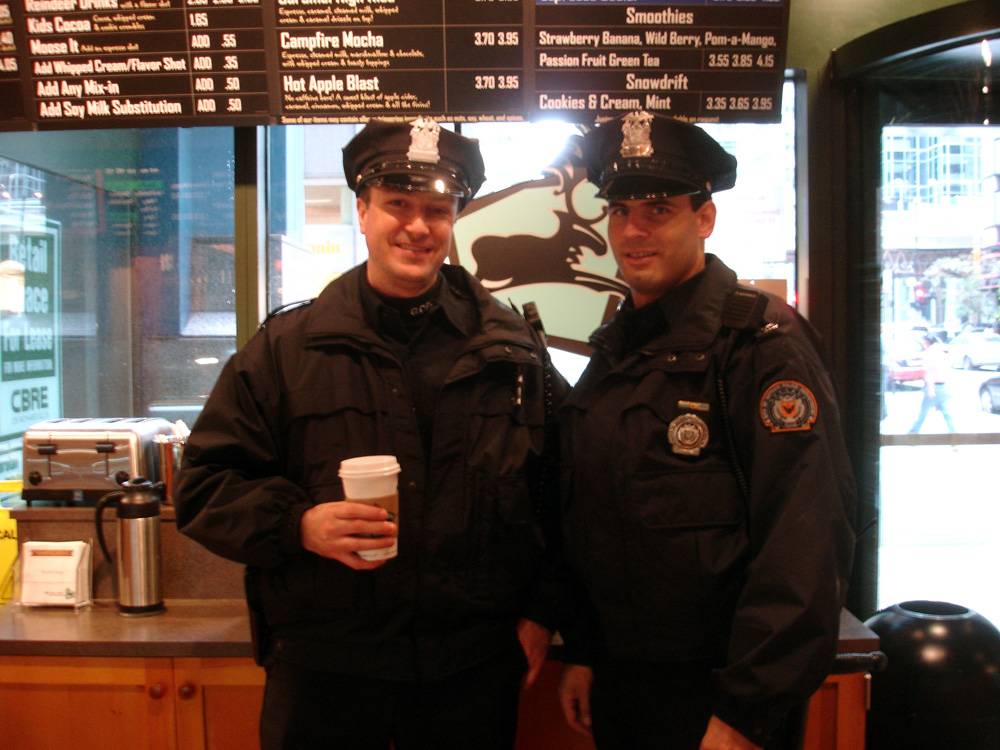
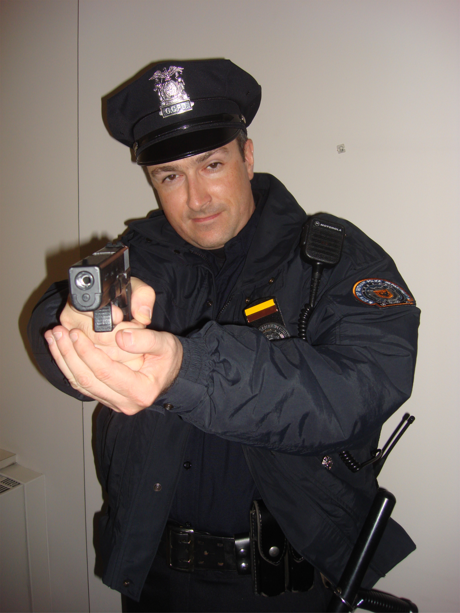

Dirty Carol and Officer Hanley
A few more production proofs from Overproof have been posted to Flickr. Check out Carol's gritty portrayal!

Put down the weapon!
While we're on the subject of police, you can check out MY performance in The Dark Knight! Both Carol and I worked as extras on The Dark Knight (a.k.a. Rory's First Kiss) last summer. You can read about that here, here, and here.
Carol worked on the scene where the Joker crashes Harvey Dent's fundraiser, but unfortunately we were unable to spot whether she was visible, with all the action and quick cuts. We'll have to get the DVD and check it out in slow-mo.

Gotham City's Finest... no donuts!
I was more fortunate, and am plainly visible in the scene just after the SWAT truck chase when Harvey Dent is addressing a crowd of reporters [edit: I am told it is at 1 hour 23 minutes]. I am the cop holding back the crowd, and I am just to the left of Harvey on the screen. It seems like I had a good 3-5 seconds of face time. There were a couple other scenes that I worked as well, but I couldn't tell if I was visible. Unlike Carol, I never got to draw my weapon (except for this

).Originally published on the Blogspot site